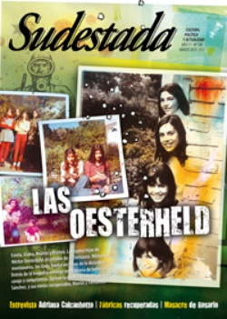

Buscar
El día que el payaso lloró
El estigma de una película que nunca fue estrenada, la obsesión de su protagonista, la obra que se metía con el Holocausto y le daba un tono tragicómico mucho antes de la premiada La Vida es Bella.
Edición N° 106
Marzo 2012
Revista bimensual
Comprar edición impresaSumario
- Las Oesterheld
- Pensar es peligroso
- Adiós al Flaco
- El juego en que andamos
- "Las canciones sobrevivirán en cualquier lugar"
- Un barrio con heridas abiertas
- Mujeres tareferas en lucha
- "La palabra es del pueblo"
- Vidas en fuga
- El día que el payaso lloró
Compartir Articulo
1. Interior del bar. Escena nocturna. Acodado sobre la barra está Helmut Doork, el payaso, que apenas si levanta la mirada para pedir otra copa. Sabe que muy pronto lo despedirán del circo. Está tomando demasiado, y le dan ganas de hablar. Habla de los hombres y de sus principios. Habla de la confianza y de la traición. Mira la imponente imagen de Hitler que decora el bar, y comienza a hablarle a él. Es un tonto, el Führer es un tonto, un engreído que no sabe que, tarde o temprano, los que dicen ser sus amigos también lo traicionarán. Helmut "humaniza" a Hitler, y lo trata como a cualquiera de los parroquianos que están hoy tomando sus cervezas en este bar. O como esos hombres que lo observan, en silencio. Helmut sabe que son agentes de la Gestapo, pero está tan borracho que se burla de ellos. Helmut toma su peine del bolsillo, lo moja en un vaso de cerveza, se acomoda el pelo e improvisa un bigote con mermelada. Mira a los agentes y les grita "¡Hail yo! ¡Hail yo!", hasta que, finalmente, se desmaya. Los hombres lo levantan y lo meten en un vehículo.
2. Para principios de la década del 70, Jerry Lewis tenía ya casi cuarenta películas en su haber. En los 50 había formado una de las duplas cómicas más exitosas del cine junto al actor Dean Martin, y una década después se había consagrado en solitario con el que para muchos es su mejor trabajo, El profesor chiflado. Sin embargo, con el paso del tiempo, sus últimas películas no habían sido tan bien recibidas por el público, y algunas malas decisiones lo llevaron a trabajar para un casino de Las Vegas. Lewis sabía que necesitaba un cambio.
En 1971, el productor Nathan Wachsberger le acercó un guión que podría ser la chance para ese cambio. Se llamaba El día que el payaso lloró. Era una historia de nazis, nenes condenados y un payaso alemán de nombre Karl Schmidt. La idea era terriblemente atrevida: se trataba de meter a Jerry Lewis en un campo de concentración, de mezclar el Holocausto con pases de comedia, de llevar al espectador desde la sonrisa hasta la más profunda oscuridad. Incluso el protagonista (cuyo nombre cambiaría al de Helmut Doork) representaba todo un reto con sus dudas, con las idas y vueltas de sus acciones, y con las simpatías y rechazos que despertaría en el público. Lewis se detuvo en el final de la historia: "Qué horror -dijo-. Esto tiene que ser contado".
La preparación fue exhaustiva: el actor llegó a perder 16 kilos para la caracterización del personaje. Visitó Dachau y Auschwitz. Pasó por París, y realizó las escenas de circo con las que inicia la cinta. En abril del 72 se dirigió a Estocolmo, donde se filmaría la mayor parte de la producción.
Los problemas empezaron dos semanas después. El equipo y los artistas se quejaron porque sus cheques habían rebotado en el banco. Lewis quiso presentarle el problema a Wachsberger, pero se encontró con que el productor había escapado a algún lugar del sur de Francia, desde donde prometía telefónicamente un dinero que nunca llegó. Para colmo, la posibilidad de comprar los derechos del guión había caducado al no pagar los 50 mil dólares que debía recibir su autora, Joan O'Brien. El proyecto parecía condenado al fracaso: Jerry Lewis, perdido en Suecia, actuaba y dirigía una película sin papeles, sin apoyo y sin dinero.
Como pudo, trató de solventar los gastos con plata de su propio bolsillo. La producción se redujo, y se retocaron partes del libreto para contemplar las nuevas necesidades. Lewis llevó el cuerpo al máximo de lo tolerable, durmiendo sólo tres horas por noche y cubriendo a las corridas los baches que Wachsberger había generado con su ausencia. A veces, se lo veía pasear por los escenarios con el gesto intranquilo, agotado, sumido en sus preocupaciones. Curiosamente, esta clase de hechos ayudaron a que Lewis interpretara el papel del payaso torturado y superado por las circunstancias con mayor credibilidad.
La filmación demandó 113 días, pero al final todavía le esperaba otra sorpresa: Waschberger, custodiado de cerca por sus abogados, quería demandarlo por incumplimiento de contrato. Afirmaba que tenía todo lo necesario para terminar la película sin él.
De alguna manera, Lewis consiguió recuperar la cinta, pero la película nunca fue estrenada. Los estudios europeos aún reclaman el pago de ciertas deudas, y los guionistas -todavía dueños de los derechos- critican las modificaciones que hizo sobre el libreto. Las pocas personas que pudieron ver El día... ofrecen críticas dispares: hay quienes la consideran una obra de arte sublime, perfecta; para otros, la cinta es una aberración digna del olvido. Algunos críticos de cine, incluso, han afirmado que se trata de "la peor película de la historia". Sin verla, claro.
Jerry Lewis aún guarda la única copia de El día que el payaso lloró, inconclusa y dormida en algún cajón secreto. Hoy, apenas si pueden conseguirse dos versiones del guión y un par de imágenes del backstage. Incluso han surgido rumores de que Steven Spielberg quiere hacer una reversión del film, y que Robin Williams sería el elegido para el papel protagónico. Un castigo peor que el olvido, digamos.
(La nota completa en la edición gráfica de Sudestada Nº 106 - marzo 2012)
Comentarios
Ramiro Montero
Articulos más vistos


LIBRERÍA SUDESTADA

Colección infantil

Distribuidora de Libros

Suscripción

Sudestada en URUGUAY

Otros articulos de esta edición
Las Oesterheld
Estela, Diana, Beatriz y Marina. Las cuatro hijas de Héctor Oesterheld, el creador de El Eternauta. Militantes montoneros, los cinco ...
Mujeres tareferas en lucha
Trabajan cortando la yerba mate en los campos de Misiones. Sufren junto a sus hijos en la precariedad de campamentos ...
Adiós al Flaco
(Mural: Lumpenbola | Foto: Marcelo Metayer)
Pensar es peligroso
Vidas en fuga
Tras vidas tan y no tan diferentes, una encrucijada de sus destinos hizo que el bandido rural Marcos Vallejos y ...
 Masacre de Moreno, en Rosario
Masacre de Moreno, en Rosario
Un barrio con heridas abiertas
El 1º de enero pasado un grupo de sicarios fusiló a tres militantes del Frente Popular Darío Santillán en el ...